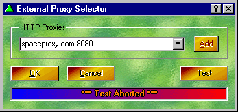
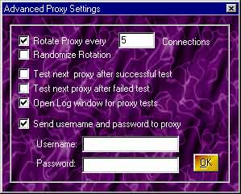
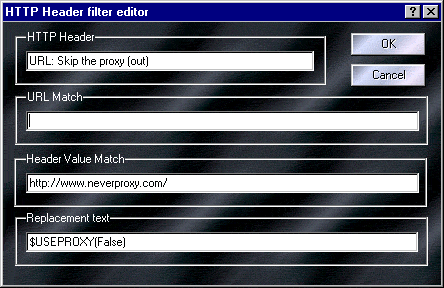

The Proxomitron can itself use a proxy server. In fact, you can maintain a list of multiple proxy servers and easily switch between them.
This is Proxomitron's external proxy configuration dialog. Click on an area to get an explanation of its function.

What can an "external" proxy do?
The most common use for a proxy server is to act as a "global" webpage cache in order to speed up web browsing (especially overseas or where Internet connection may be slow or unreliable). However they can do much more - anything from filtering out material inappropriate for children, to translating a webpage from one language to another.
Adding proxy comments
As of Naoko-3 you can follow a proxy entry with any comment text you like (using a space to separate them). This can be helpful to remind you what a particular proxy does or how reliable it has been. Just use the following format...
proxy.host.name:port comment text here
Adding lists of proxy servers
It's possible to add multiple servers at once by first clicking "Add" then pasting in a list of proxy server entries. This will work as long as the entries are in the correct format. You can also enter multiple items by pressing Ctrl+Enter after each entry in the add dialog.
Advanced proxy settings
Right-clicking over the proxy list edit window will allow you to select "Advanced proxy settings". Among other things, this consists of one oft-requested feature: proxy rotation. When enabled proxy rotation will automatically switch to the next proxy in the list every so many connections. It's best to be sure all proxy servers in the list are reliable if you decide to use this feature.

You can also Randomize proxy rotation for that extra little bit of... Well, that extra little bit of whatever that accomplishes.
Proxy passwords
If you use a proxy that requires a password (as is often the case with proxy "firewalls") you can enter that here as well (note: this will only work for proxies that accept "Basic" authentication. Microsoft's proprietary NTLM authentication is not supported).
Testing a proxy
The Proxomitron can perform a "loopback" test on an external proxy. During the test the Proxomitron makes a request for a web page - through the remote proxy - back to itself. It then monitors both ends of the conversation. Use it to tell if a particular proxy server is accessible and available for use. (Note: if you use a firewall like ZoneAlarm, you may need to allow Proxomitron to act as a server for the test to work).
If the test is successful, the status window will show the name of the proxy server as it would appear to the remote host. Otherwise an error message will be reported.
Far more detailed information, including HTTP headers added by the remote proxy, can be viewed if the log window is open during the test.
Using this information you can see, for example, if a proxy is "Anonymous". To do this look for your computer's IP address in the headers returned. If you see it anywhere except the "Host:" header (it's only there because of the loopback) then the proxy isn't fully anonymous.
To make sure the log window always opens before a test just go into the Advanced Proxy Settings (see above). You can also have the next proxy in the list tested automatically.
Using Header Filters with Proxies
Proxomitron supports several commands that can be used in Header Filters to control your proxy. For example $USEPROXY(True) or $USEPROXY(False) can be placed in the replacement section to turn the proxy on or off for a given URL (overriding the global setting). While $SETPROXY(proxyname:port) when used, can auto-select a particular proxy for that URL (Note: the proxy must also be in your external proxy list!).
Most commonly, these commands would be used with a URL: header filter to activate or deactivate a proxy based on the URL. Here's an example that would always turn the proxy off for www.neverproxy.com...

 Return to main index
Return to main index